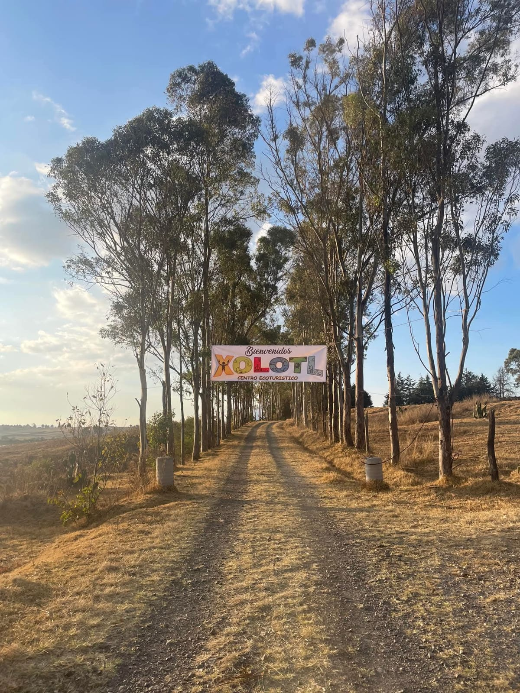

Atractivos Naturales
Conoce los destinos más emblemáticos de Jiquipilco

Presa
Parque Ecoturístico "El Jabalí"
Un espejo de agua inmerso en medio del bosque en la cima de San Bartolo Oxtotitlán. Ideal para pesca de trucha, caminatas, campismo y disfrutar de cabañas rústicas.
Pesca de trucha
Campismo
Canotaje
Bosque de encino, pino y oyamel

Laguna
Parque Ecoturístico "Presa Verde"
Ubicada a solo 4 km de la cabecera municipal, su agua tiene una peculiar pigmentación verde derivada de los minerales emanados del manantial que la nutre.
Natación
Área de picnic
Senderismo
A 4 km del centro

Montaña
Parque Ecoturístico "La Bufa"
Con una elevación de 3,767 mts. sobre el nivel del mar, ofrece impresionantes bosques de coníferas, valles, riachuelos y cañadas. Ideal para actividades extremas.
Ciclismo MTB
Rapel
Cabalgata
3,767 m.s.n.m.

Especie Única
Centro Ecoturístico Xolotl
Un lugar dedicado a la preservación del ajolote. Además del cuidado de esta especie endémica, ofrece restaurante, hospedaje, camping, granja y gotcha.
Ajolotario
Restaurante
Hospedaje
Sábado y Domingo 9:00-18:00